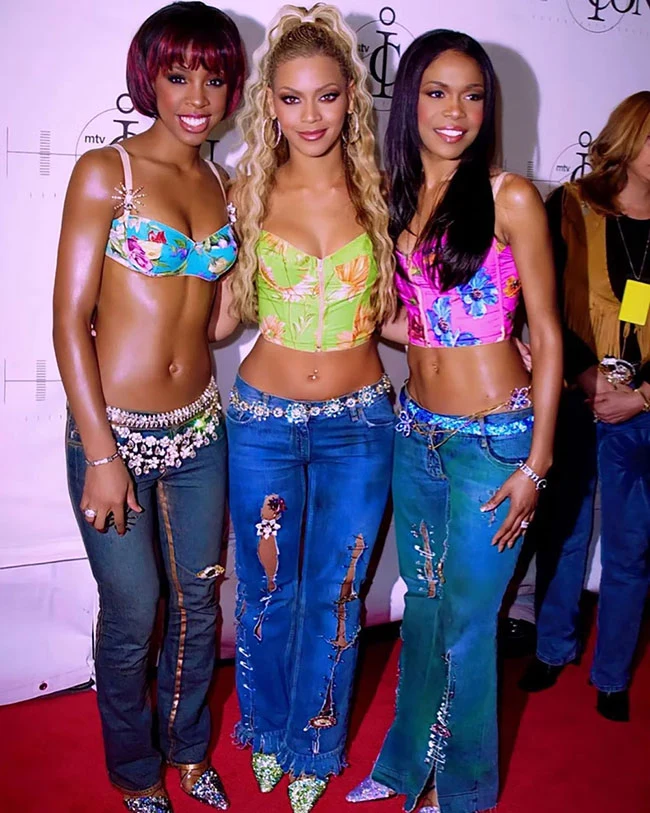
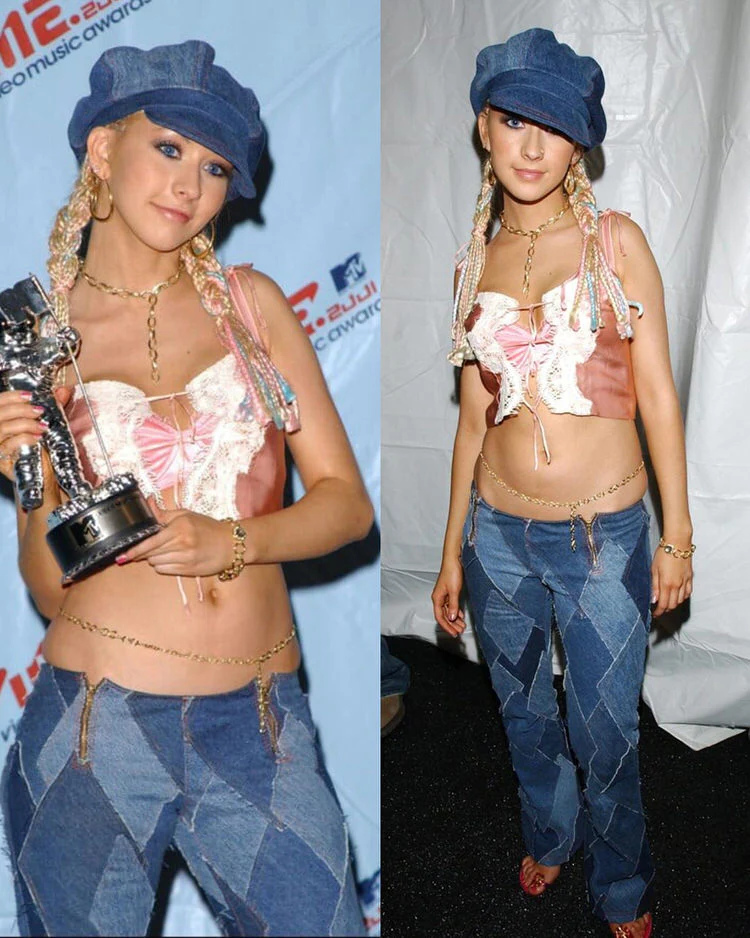

El Fenómeno "Corpcore" u "Office Siren"
Es una respuesta irónica a la crisis de la cultura laboral y el burnout. Tras la flexibilización del trabajo por la pandemia y la creciente precarización, las generaciones más jóvenes están adoptando la estética corporativa tradicional no como una aspiración, sino como un disfraz o una sátira.
Al mismo tiempo, la "Office Siren" reapropia la mirada masculina sobre la secretaria o la ejecutiva de los años 90, convirtiendo el uniforme de oficina en una armadura de poder y subversión femenina frente a un sistema económico agotador.
La Nostalgia del Y2K
La nostalgia es el principal mecanismo de defensa cultural de esta década. En una era dominada por la hiperconexión, la inteligencia artificial y la velocidad digital, mirar hacia el archivo de los años 90 y los 2000 ofrece un refugio analógico y seguro.
Se recicla el pasado porque el futuro se percibe demasiado incierto; la moda encuentra confort en una época que se sentía más táctil, rebelde y menos saturada por la vigilancia de las redes sociales.

